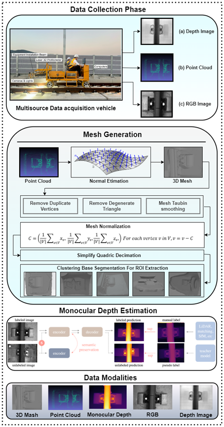

01 · Infrastructure
Multimodal railway inspection
Railway inspection benefits from combining visual appearance with measurements of shape. A multisensor vehicle collects RGB images, depth images and point clouds of rail components. The workflow turns point clouds into 3D meshes and estimates monocular depth from images, giving complementary ways to represent fastener geometry.
- Field acquisition
- RGB records surface appearance. Depth images and point clouds provide complementary measurements of component geometry.
- Geometry processing
- Estimate surface normals, clean and simplify the mesh, then isolate the fastener region for analysis.
- What to compare
- Test which features remain stable across viewpoints and how mesh simplification affects the geometry used in simulation.
